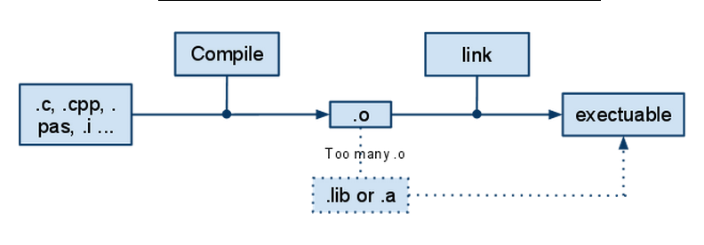

关于Makefile
昨天遇到Makefile的问题。我是个程序盲，也是个linux盲，很多不懂。所以我就搜集一些知识，列举如下：
1. 正如许明彦所说：
Makefile 基本上就是『目标』(target), 『关连』(dependencies) 和『动作』三者所组成的一连串规则。而 make 就会根据 Makefile 的规则来决定如何编译 (compile) 和连结 (link) 程式。
也就是说，拿到源文件，要得到可执行的文件，需要经过下面的几部：

2. 上面提到，如果会有很多源文件，生成很多的o文件。那么一个比较好的办法是，写一个文件告诉编译器改怎么操作。
http://blog.csdn.net/wtz1985/archive/2009/02/04/3862141.aspx （CSDN的文章版权声明：“凡本网站上所有的文字、图片和音频、视频稿件，任何媒体、网站或个人未经本网站协议授权不得转载、链接、转贴或以其他方式复制发表，如有需要，请与本网站联系相关事宜。违者本网站将追究其法律责任。”呃，不知道我引用这句话是不是也违反规定了……OTL）所以我不加链接了，也不引用了。
那篇文章里的内容，总结起来，基本上是
1. 可以把命令写在这个文件里面，写的时候，可以使用事先定义（定义变量，类似宏定义吧）的方式来方便阅读和更改。
2. 各种文件比较多，可能有些依赖关系，需要指定的话，使用 “example.o: 1.cpp 1.h 0.h”。意思是说，冒号左边的目标文件依赖于右边的这些文件。这一句写完了之后，那么下面的跟
3. 关于隐含变量的知识：
$^ 我们上面不是指定了一些依赖关系么，那么这些依赖关系怎么起作用呢？这个符号就是用来代指到这个符号所在位置为止，当前的所有指定的依赖关系中的所有的目标文件。
$< 当目前位置指定的依赖关系中的第一个对象.
$@ 当前目标对象.
举一个不用依赖关系的粒子说：
bin/cmb: $(MATHOBJECTFILES) $(ANISOTROPY)/driver.cc
$(CXX) $(FLAGS) $(INC) $(MATHOBJECTFILES) $(ANISOTROPY)/driver.cc $(LIB) -o bin/cmb
这个里面的意思是：
第一行：那些source生成executable的文件放在bin/cmb。
第二行：使用定义的CXX 来完成这项任务。用到前面定义的INC，我们这里前面定义的是些include的文件，然后把那几个source文件编译成object放在bin/cmb下面。
在真 OO无双的http://www.cnblogs.com/oomusou/archive/2006/11/29/575838.html这篇文章中，给出了一个标准的c++的makefile的写法：
一个很典型的Linux C/C++的makefile写法，其它的应用可根据此template修改。
(注意每一行的前面若有空格，是tab，不是space)
#Source file
SRC = ThreadQueue.cpp
#Object file
OBJ = $(SRC:.cpp=.o)#Output execution file
PROGRAM = ThreadQueue#Compiler
CC = g++#Include
INCLUDE = -I/usr/include/ncurses -I/usr/include/
#Linker Parameter
LINKPARAM = -lpthread -lncurses
#Options for development#CFLAGS = -ansi -g -Wall
#Options for releaseCFLAGS = -ansi -O -Wall
all: $(PROGRAM)
$(PROGRAM): $(OBJ)
$(CC) -o $(PROGRAM) $(LINKPARAM) $(OBJ)
.SUFFIXES : .cpp
.cpp.o:
$(CC) $(INCLUDE) $(CFLAGS) -c $< 42
clean:
-rm *.o
最后，http://hi.baidu.com/yanweinet/blog/item/24de5b1ff3a51bcba6866967.html有一个unix的例子：
作为Linux或Unix下的程序开发人员，大家一定都遇到过Makefile，用make命令来编译自己写的程序确实是很方便。一般开发情况下，大家都是手工写一个简单Makefile。下面先给一个最简单的示例代码：
#makefile示例
object= main.o function.ochange:$(object)
cc -o change $(object)
mv change $(HOME)/bin
main.o:
cc -c main.c -I$(HOME)/program/date/include
function.o:
cc -c function.c -I$(HOME)/program/date/includeclean:
rm change $(object)
说明：
这里是使用unix下的CC编译器，当然也能换成gcc
最后生成的可执行文件名：change
源程序文件：main.c function.c
.h文件（头文件）所在目录:$(HOME)/program/date/include
中间目标文件名：main.o function.o
当在shall中执行命令：
make clean
将会执行
rm change $(object)
删除文件: change main.o function.o
语句：
mv change $(HOME)/bin
将最终生成的可执行文件移动到
$(HOME)/bin
这一步可以不要，但这样符合目录管理规范，而且$(HOME)/bin一般在环境变量PATH中有设置，这样可以在任意目录下时也能运行可执行文件。注意：
makefile编辑时另起一行，注意不能用空格，要用TAB键，否则会报错
makefile里面的注释用#,其它都会报错Makefile简单介绍
Makefile是用于自动编译和链接的，一个工程有很多文件组成，每一个文件的改变都会导致工程的重新链接，但是不是所有的文件都需要重新编译，Makefile中纪录有文件的信息，在make时会决定在链接的时候需要重新编译哪些文件。
Makefile的宗旨就是：让编译器知道要编译一个文件需要依赖其他的哪些文件。当那些依赖文件有了改变，编译器会自动的发现最终的生成文件已经过时，而重新编译相应的模块。
这篇文章中，比较有启发性的是：
I是include文件。
make会决定那些需要重新编译。
还有一个http://my.oschina.net/alphajay/blog/10225
写一个完整的makefile步骤如下：
1 定义可执行文件的名称
TARGET = MyPro
2 指定此编译工程所要使用的头文件所在的目录
INC = -I. -Iheader1 -Iheader2
3 指定cpp文件所在的目录
VPATH = .:src1:src2
4 指定所有的cpp文件
SRC_PATH = $(foreach dir,$(subst :, ,$(VPATH)),$(wildcard $(dir)/,*.cpp))
解释：
foreach，subst，wildcard为makefile的内置函数，其中wildcard函数为字符串连接函数，把函数中的两个参数连接成一个。subst是字符串替换函数，在此句中意思是把VPATH变量中的冒号替换成空格。foreach函数，就是把subst函数的返回值，以空格为分隔符，循环取值赋给dir，然后接受wildcard的处理。
这句的总体意思是：从VPATH中获取每个目录，并分别找出此目录下所有的cpp文件，赋给SRC_PATH变量。
5 定义中间object文件存放的目录。
OBJ_DIR = ./obj
6 所有的object文件要按照和源代码对应的目录存放，定义object文件的目录
OBJ_PATH = $(addprefix $(OBJ_DIR)/, $(subst :, ,$(VPATH) ) )
解释：
addprefix函数是加前缀的函数，词句中是给VPATH中所有已经定义的目录加上./obj/的前缀。
7 定义连接成目标文件所需要的所有的object文件的名称
OBJS = $(addprefix $(OBJ_DIR),$(subst .cpp,.o,$(SRC_PATH)))
8 创建一个object文件的目录
MAKE_OBJECT_DIR := $(shell mkdir -p $(OBJ_DIR) $(OBJ_PATH))
*************************
9 定义实用的编译器
CXX = g++
CXXFLAGS = -g
10 定义目标文件的生成规则
$(TARGET) ： $(OBJS)
$(CXX) -o $@ $(OBJS) $(INC) $(CXXFLAGS)
11 定义object文件的生成方式：
$(OBJ_DIR)/%.o : %.cpp %.cpp.d
$(CXX) -o $@ -c $< $(INC) $(CXXFLAGS)
12 定义.cpp.d文件的生成方式
DEPS = $(OBJS:.o=.cpp.d)
$(DEPS) : $(OBJ_DIR)/%.cpp.d ： %.cpp
$(CXX) $< -MM $(INC) > $(OBJ_DIR)/$< .d
13 定义清理函数
clean:
@rm -rf ./obj
@rm -rf $(TARGET)
至此，一个通用的makefile完成了，如果增加源代码目录和头文件目录，只需要在INC变量和VPATH变量处加上此目录即可。中间object文件和文件的依赖关系自动生成。
感言：
我是盗窃知识的……这篇文章就是拼凑列举了人家的文章而已~

{kind=link}
真巧……今天还在看，怎么写fortran的makefile～
呵呵，我昨天拿到一个程序，用到这个，今天来看看相关的东西～